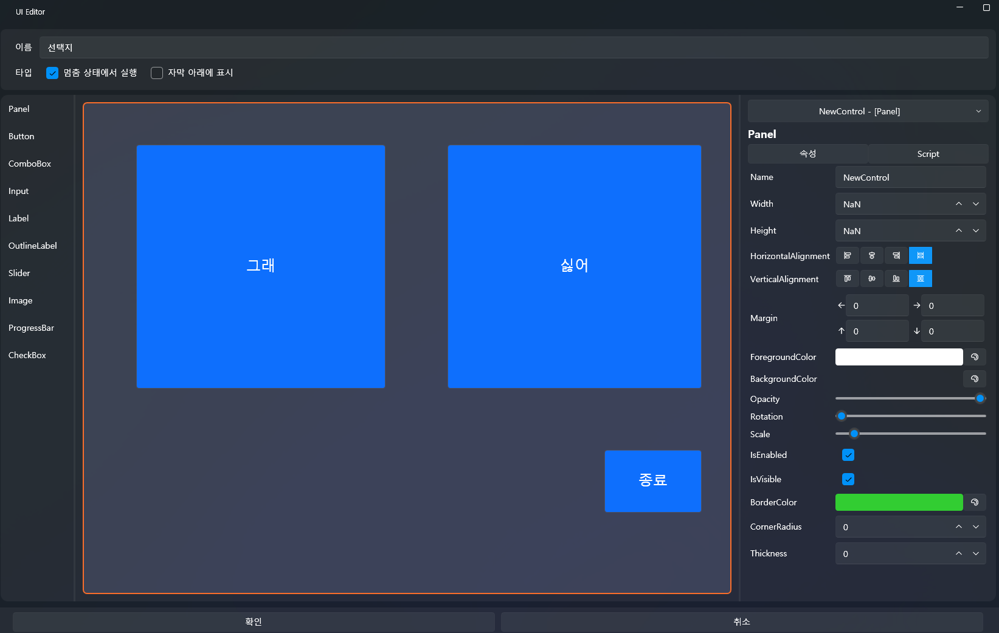

创建简单的选择与分支¶
本教程将延续上一章节（将音频像视频一样显示并添加字幕）中完成的项目。
在该项目的基础上，我们将实现一个系统：
在播放过程中出现选择按钮，
根据玩家选择执行 继续 / 跳转 / 结束 的分支流程。
🧭 整体流程预览¶
最终将实现如下结构：
- 轨道在特定时间点暂停
- 弹出选择 UI
- 点击按钮 →
- 继续播放
- 跳转到指定时间
- 结束项目
1️⃣ 创建用于分支的 UI 画面¶
将在其中显示选择按钮的专用 UI 画面。
📌 创建 UI 画面¶
- 在顶部菜单选择 UI
- 点击 New UI（新建 UI）
- 一个新的 UI 画面将被创建
📌 启用“暂停状态下执行”选项（重要）¶
为了使轨道暂停时 UI 仍能响应输入，
必须在 UI 属性中启用：
- Execute When Paused（暂停状态下执行） ✔

1-2️⃣ 创建 3 个选择按钮¶
在 UI 画面中放置 3 个按钮：
- 好吧，我们去吃冰淇淋
- 不要
- 结束
在左侧控件栏拖入 Button 三次即可。
💡 按钮布局 & 设计技巧¶
- 将按钮的 Alignment（对齐方式） 设为居中，可使 UI 更整洁
- 按钮文字可在右侧属性栏的 Content 中修改
- 根据场景实际效果调整 FontSize、Width、Height
- 边编辑边播放预览效果会更精确

3️⃣ 在时间轴中放置临时脚本（Inline Script）¶
这个分支系统不能使用全局脚本，
而应该使用 临时脚本（Inline Script），
它只在时间线的特定点触发，非常适合做分支触发点。
📌 添加临时脚本¶
- 在左侧脚本面板
将 “拖曳以添加空脚本” 拖到时间轴脚本轨道上 - 松开鼠标即可添加

⏱ 调整脚本触发时间¶
将脚本区块拖动到 01:31.000（1 分 31 秒） 的位置。
当播放到这里时，将自动暂停并显示选择 UI。
3-1️⃣ 双击临时脚本进入编辑¶
编辑内容如下：
✨ 配置 ShowChoiceUI 临时脚本¶
按以下顺序加入动作：
- UI Show → 选择 UI
- 在屏幕显示选择按钮
- Track Pause（暂停轨道）
- 等待玩家选择
⚠ 注意：
为了防止 UI 不断重复出现，
请启用 “只执行一次（One-Time Execution）”。

示例：

到达 01:31.000 的瞬间：
- 轨道暂停
- 选择 UI 弹出
- 玩家可进行选择
4️⃣ 设置按钮点击事件¶
UI 中的按钮需要分别设置点击脚本。
操作步骤：
- 打开 UI 编辑界面
- 点击任意一个按钮（例：继续按钮）
- 右侧属性栏 → Script（脚本）
- 点击 Click → Edit（编辑）

✔ “继续”按钮（Resume）¶
作用：关闭 UI → 恢复播放
脚本动作：
- 关闭 UI
- 恢复播放（Track Resume）

✔ “跳转”按钮（Jump Track）¶
例：跳到 00:01:20.000
脚本动作：
- 关闭 UI
- Jump Track（时间跳转）
- 恢复播放

✔ “结束”按钮（Exit / Stop）¶
脚本动作：
- 结束项目
提示：
编辑模式下不会退出，但播放模式会真正结束程序。

✨ 结果¶
三个按钮将具备以下功能：
- 继续 → 关闭 UI + 继续播放
- 跳转 → 关闭 UI + 跳转并继续播放
- 结束 → 停止项目
轨道暂停时按钮能正常工作，
正是因为在 UI 上启用了 Execute When Paused 选项。
6️⃣ 整体流程总结¶
- 到达分支点
- ShowChoiceUI → 显示 UI + 暂停
- 玩家选择
- 根据按钮动作分支到不同流程：
- Resume
- Jump Track
- Stop
✨ 完成效果¶

你现在已经实现了：
- 在轨道特定时间停止
- 自动弹出选择 UI
- 根据玩家操作进入不同分支
- 可用于制作简单菜单或剧情分歧
接下来将学习 变量 & 条件逻辑（中级）
👉 变量与条件逻辑